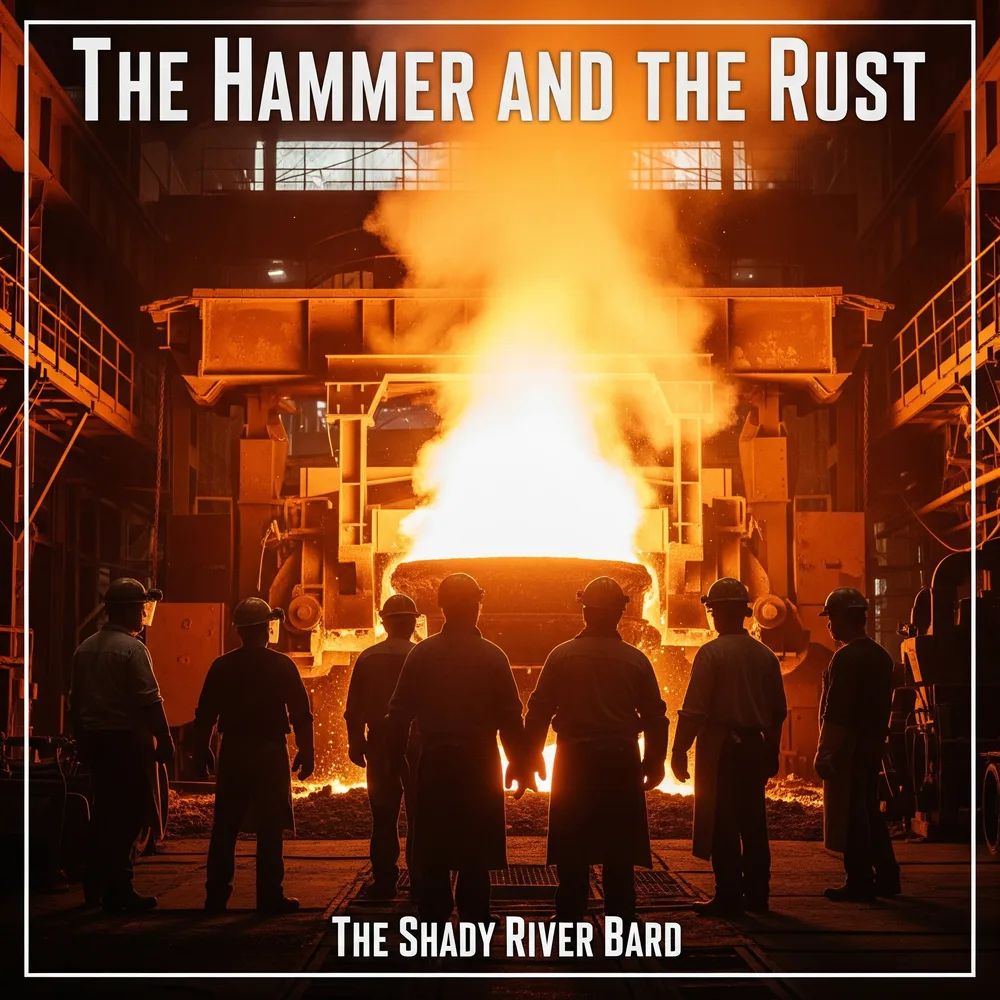

The Hammer & the Rust
An Industrial Cantata of the American Rust Belt
A sonic monument to a forgotten congregation: the American industrial worker. Spanning four epic narrative acts, The Hammer and the Rust fuses traditional labor work songs, visceral Mongolian throat-singing drones, and real scrap-metal industrial percussion into an unflinching requiem and testament to the rise, violent collapse, human devastation, and hard-won resilience of the manufacturing heartland.

Mastered for High-Resolution Spatial Audio • 14 Concept Compositions
The Journey from Fire to Bone
A narrative cantata unfolding across four distinct emotional and societal movements—from the thunderous zenith of industrial might to the sudden silencing, communal grief, and defiant integration of history into authentic strength.
Thematic Analysis: A Requiem for the Rust Belt
Deconstructing the socio-historical forces that defined the American industrial heartland—analyzing the macro-economic shocks, corporate betrayal, somatic trauma, and cultural memory explored in the album.
From “The Poison We Trust” to “The Hammer and the Rust”
The somatic devastation chronicled in Track 09 (“Black Lung Lullaby”) directly bridges The Shady River Bard's earlier investigation in The Poison We Trust into corporate toxic contamination. Where Album 06 examined invisible chemical poison, Album 09 confronts the literal coal and silica dust woven into the respiratory tissue of workers who gave their bodies to keep the furnaces lit.
The Sound of “Industrial Folk Chant”
Engineered specifically for The Hammer and the Rust, the album's acoustic architecture weaves three distinct musical traditions into a singular sonic monument:
1. Work Songs & Chants
Rooted in traditional American labor anthems and sea shanties. Resonant baritone leads trade lines with a collective chorus, capturing the physical cadence and shared solidarity of the mill floor.
2. Throat Singing & Drones
Deep, guttural kargyraa throat singing evokes the terrifying sub-bass roar of blast furnaces, while piercing sygyt overtones suggest whistling steam pressure and high-tension wires.
3. Industrial Percussion
Inspired by Einstürzende Neubauten: real sledgehammers striking anvils, screeching angle grinders on sheet metal, steel chains, and clattering scrap iron serving as rhythm and emotional dirge.